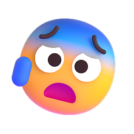
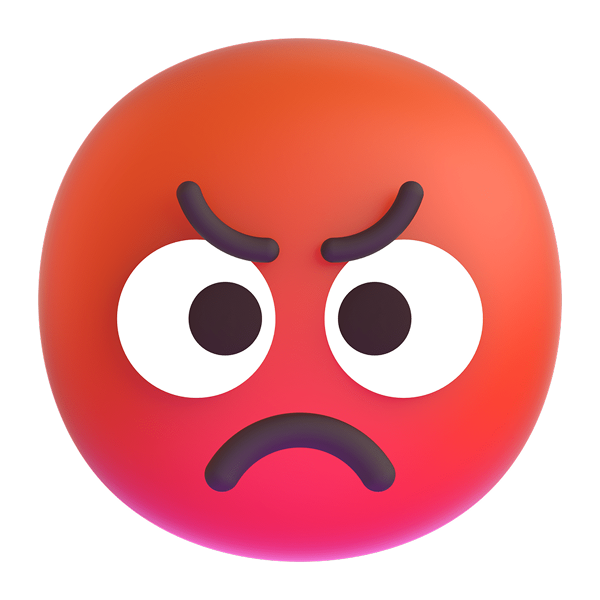

Mental Health
Detection


Objective
เพื่อวิเคราะห์ข้อมูล ปัจจัยต่างๆ ที่มีผลต่อการเกิดภาวะความเครียด (Growing Stress)
เพื่อวิเคราะห์ปัจจัยที่อาจส่งผลทำให้เกิดปัญหาทางสุขภาพจิต
เพื่อวิเคราะห์แนวโน้มบุคคลที่อาจมีปัญหาด้านสุขภาพจิต